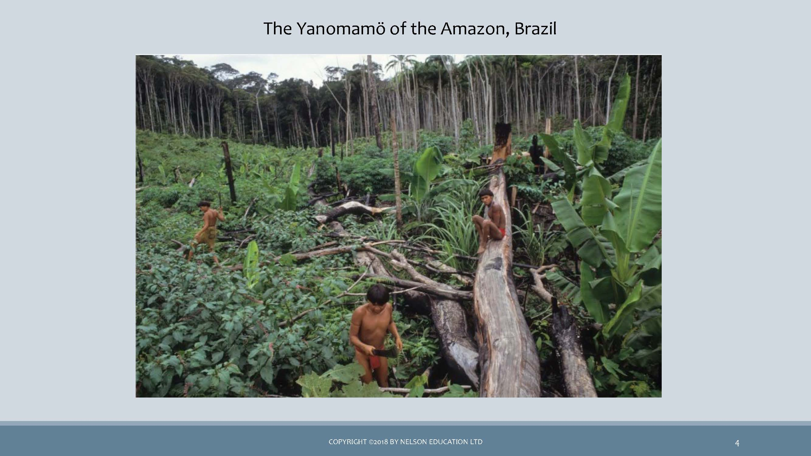

5 Understanding Livelihoods (Subsistence and Economics)

Market Day in a town in Uganda. Photo by Ruth Anaya
Overview
In Unit 3, we will shift our focus to learning about the many different ways in which societies lived across the span of history, and how they live across the span of distance, in the many different geographies and environments of the world. Topics in this unit intersect with every other topic of anthropology, and the ways of getting or producing food, and ways of distributing and consuming products have wide-ranging implications. You will be introduced to some of the most unique cultures of the world, cultures whose way of life starkly contrasts with your own. This unit concludes with a challenge to live life differently for two weeks, without a tool or technological item. This short-lived experience will challenge you to think about how you could, or how you perhaps should, live your life differently than you have been doing.
Topics
This unit is divided into the following topics:
- Subsistence
- Economics
- Tools and Technologies
Learning Outcomes
When you have completed this unit, you should be able to:
- Identify the four modes of subsistence and describe the major activities associated with obtaining food in each system.
- Assess the ways in which subsistence systems are linked to expectations about gender roles.
- Categorize the social and economic characteristics associated with agriculture and describe the benefits and drawbacks of the agricultural subsistence system.
- Describe the characteristics of the informal economy and of fair trade (modes of production).
- Provide cultural illustrations of reciprocity, redistribution, and market exchange.
- Explain how modes of exchange, and the use of money, shape everyday life and social relations.
- Explain how intentional deprivation significantly and positively changed your values, attitudes and behaviors.
Activity Checklist
Here is a checklist of learning activities you will benefit from in completing this unit. You may find it useful for planning your work. Note that all Learning Lab activities contribute towards your Participation mark for this course.
- At the bottom of the page in Topic 1, students will find some important resources. There are a number of readings and slides for you to review. Additionally, take a few moments to watch through the video.
- At the bottom of the page in Topic 1, students will find some important resources. There are a number of readings and slides for you to review. Please note that the resources on Ten Thousand Villages and Fair Trade will be discussed during the Learning Lab for this unit.
Learning Lab
During this Learning Lab, students will be introduced to the UnThing Experiment. This activity will take place over a period of time - for this reason, students are being introduced to the activity in Unit 3…. As part of this challenge, students will be submitting a reflection - it will be due at the end of Unit 5. This assignment will be outlined, in detail, on the “Assessment” page in Unit 5 - please preview the assignment before attending the Learning Lab for Unit 3.
Resources
- Brown, N., de González, L. T., McIlwraith, T. F., & American Anthropological Association. (2018). Perspectives: An Open Invitation to Cultural Anthropology.
- Subsistence
- Economics
- Wesch, M. (2018). The Art of Being Human: A Textbook for Cultural Anthropology. New Prairie Press.
- Other online resources will be provided in the unit.
5.1 Subsistence Systems
Our first topic, in Unit 3, teaches us about the different ways in which peoples of the world get their food. You will be reading two chapters from the Perspectives text that will give you systematic information about how small-scale societies forage (gather plants and hunt or fish).We will also learn about how increasing complexity, and favorable environmental conditions, have allowed societies to become horticulturalist (farmers) or pastoralists (herders). Ultimately, an important objective of this section is to introduce you (through video clips) to lifeways that are very different than your own.
As humans use the environment, they also affect it. That impact can be degrading to the environment, and can threaten small people groups whose existence is dependent on a fragile environment. To better understand this crisis, you will explore some resources that advocate for the survival of indigenous peoples.
Resources
The resources below will help you better understand the content explored in this unit. Take some time to explore this material - it will be discussed during the Learning Lab and will play an important role in course assessments.
Activity
- We continue our study subsistence systems by focusing on a sequenced perspective of getting food: from small-scale foraging to horticulture, and eventually to large-scale agriculture. Below is a set of slides that are to be followed in conjunction with the reading - they will help focus your attention:
Click to Open
Learning Objectives
- four modes of subsistence
- Domestication of resources
- How susistence and wealth are connected
- Sunsistence systems and gender roles
- Agriculture
- How global agricultural system contribute to wealth differences
Studying Subsistence Systems
- Subsistence systems …
- Foodways …
- Food is essential for humans …
- Every person plays a role …
Modes of Subsistence
- Every household must feed its members, ...- Immediate return system vs. …
- Four modes of subsistence: …
Foraging
- Relies on ...
- Hunting ...- Small groups, …
- Egalitarian …
- Generosity and sharing are …
- Work is divided among …
- Mostly nomadic groups, …
- Marshall Sahlins: …
- However,
- foraging is challengin …
- Not isolated,
- but in competition for resources with …
- Even foragers have manipulated the …
Pastoralism
- Relies on …
- Nomadic pastoralism …
- Animals are kept alive and fed well to produce …
- Trade with neighboring farms …
- … and status revolve around animal herds
- Men own cattle, … tend cattle
- … property is owned
- Act to conserve their environments using …
- Modern pressure threaten this …
Horticulture
- Relies on … that move periodically
- … tools and … labor
- … consumed by family units or exchanged with others in the community
- Also supplement their diets by … for protien
- Use shifting cultivation - …
- Multi-cropping and …
- Social life revolves around …,
- which are used as … and signs of … status
Agriculture
- Cultivation of … and animals using technologies such as … ,
- draft animals,
- … ,
- and chemical inputs
- Allows for intensive and continious use of … resources -
- led to … Revolution
- Reliance on few staple … ,
- often starches
- … growth likely need to the need to create larger and more productive …
- Farms also require more … ,
- encouraging farmers to have more … as laborers
- … of labor and specializatio occur,
- leading to … differences
- Can be argued that it lead to a … quality of life
The Global Agricultural System
- Enough food … exists to feed all the people on the planet,
- but … distributed
- Today,
- food exists in a world system
- Each product has a … chain,
- moving items far from their point of origin
- … and competition replace communal experiences
Download the Chapter and read it as you follow along with the set of slides:
You can omit the section on “The Built Environment” and “The Origins of Agriculture”.
Reading 2
- We know turn our focus to a presentation created by Dr. Anaya. Below the slideshow, you will also find some illustrative videos that support the content introduced in the slides. Together, these resources introduce you to the !Kung and Hadza as gatherers and hunters of Sub-Saharan Africa, and the Inuit as seal hunters of Canada’s northern Arctic. You are also introduced to the Masai cattle herders, and Somali camel, herders of Kenya. Through the use of pictures, you will also explore the hunting and fishing performed by a First Nation’s group: the Sto:lo. Also of interesting note, it is in the Sto:lo territory that Trinity Western University is located. Finally, we end this section with a look at a North American example of agriculture as practiced by the Amish peoples (you will learn more about the Amish in Unit 5).
Consider every concept mentioned in this set of notes as material that you will be tested on.
Click to Open
Getting Food
- Food-getting strategies vary widely from one society to another
- Five major categories
- Food collection
- Horticulture
- Pastoralism
- Agriculture (ranching)
- Industrialization
- combination of strategies
- A culture’s food getting strategy depends on the culture’s environment and technology (tools)
- Environment does not determine food-getting patterns but rather sets broad limits on possible alternatives through:
- Water sources (type and location)
- Climate: temperatures,
- rainfall
- Length of growing season
- The environment affects the mobility of a people group
- Technology helps people adapt to their specific environment
Subsistence Strategies
- Foraging
- Hunting animals
- Gathering wild plants
- Horticulture
- Small-scale cultivation
- Low intensity
- Relies on human power and simple tools
- Pastoralism
- Animal husbandry
- Products used as food and for exchange
- Intensive Agriculture
- Large-scale complex
- Use of animal or mechanical power
- Irrigation systems
- Fertilizers
- Industrial Agriculture
- Larger, more complex
- Technology
- GMOs
- Processing systems
 image of the Yanomamö of the Amazon, Brazil
- The Yanomamö practise shifting cultivation and supplement their diet with fishing and hunting.
- This way of life is rapidly disappearing due to disease, disappearance of the rainforest, and run-ins with illegal gold miners.
- Human adaptation: also known as cultural ecology or human ecology
- Anthropologists examine both cultural and biological adaptations
- Many small-scale societies have adapted extremely well to their environment
- This does not mean that they always live in total harmony with their environments. There are instances of over-farming, over-grazing, polluting waters, etc.,particularly in recent years.
- Today, industrial practices have created many environmental tragedies such as deforestation, alteration of habitats, degradation of the soil.
- Human adaptation: also known as cultural ecology or human ecology
Foraging Societies
 map of Foraging Societies
map of Foraging Societies
 map of Canada’s First Peoples Environment
map of Canada’s First Peoples Environment
Wild Edibles (& medicinal plants)
 image of wild edibles (& medicinal plants)
image of wild edibles (& medicinal plants)
 image of forest wild berries & sea weed
image of forest wild berries & sea weed
Food Collection
- HUNTERS & GATHERERS
- FORAGING
- GATHERING,FISHING,HUNTING
- OMIT P.81 (Great Basin) to p.91 top.
- Food sources are wild plants and animals
- All human societies were foragers, yet now very few foraging societies still exist
- Have very low population densities (small groups); -less than half-million left
- Are usually nomadic or semi-nomadic rather than living in one place
- Basic social unit is the family or band
- Contemporary food-collecting peoples occupy the remote and marginally useful areas of the earth (deserts, etc)
- Foragers have always had contact with non-foraging peoples through trade, and have adapted to modern-day technologies (cell phone)
- Food sources are wild plants and animals
image of fisherman at a market, Madagascar
The !Kung of the Kalahari Region
- Inhabit area too dry to support either agriculture or the keeping of livestock
- Totally dependent on foraging for their food
- Food-gathering techniques are effective
- Selectively consume edible plants
- Survival rate and life expectancy are high
- Number of hours spent gathering food is low
 image of a drop-down chart Brainstorm about the types of tools available to societies in these environments
image of a drop-down chart Brainstorm about the types of tools available to societies in these environments image of plantian crop burning by a local man
image of plantian crop burning by a local man image of step farming on a hill
image of step farming on a hill image of industrial farm equipments being used in farming
image of industrial farm equipments being used in farming image of local patoral farmer with his herd of goat in India
image of local patoral farmer with his herd of goat in India image of a chart to Compare the Inuit seal hunt with Masai cattle herding
image of a chart to Compare the Inuit seal hunt with Masai cattle herding